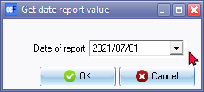
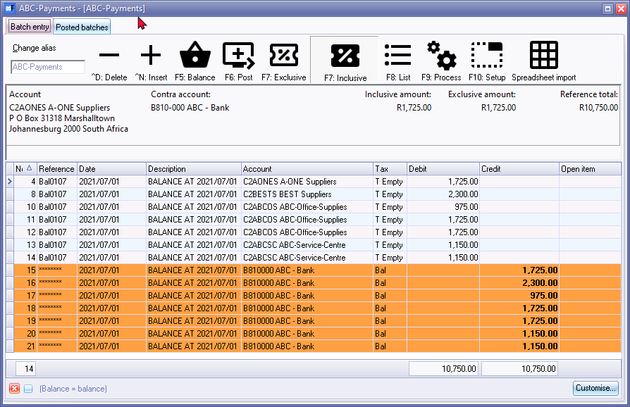
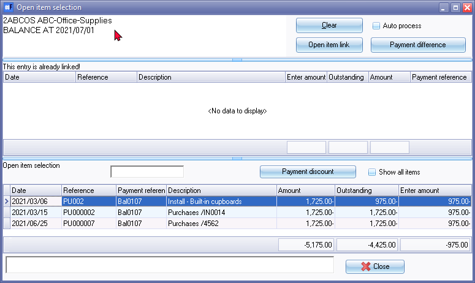

Creditor balances to date (Payments batches)
The "Creditor balances at date" batch processing option allows you to add payment transactions for all your creditors (suppliers) into the payments batch at a specified date.
You may then edit the batch (for example, decide which creditors (suppliers) to pay, change the amounts, delete creditors (suppliers), etc.).
To create outstanding transactions for creditors (suppliers) at a specified dates:
- On the Default ribbon, select Batch entry (F2).
- Select the Payments journal.
|
|
Should you have more than one Bank account, you need to make sure that you select the correct Payments journal for the Bank account out of which you are going to pay the creditors (suppliers). |

- Click on the Open button. The Batch entry screen for the selected Payments journal will be displayed.
- Enter the "Alias (batch name)" and press the Enter key, if necessary.
- Click on the F9: Process icon. The "Process the batch" options screen will be displayed.
- Select the Creditor balances at date option, and click on the OK button. The "Get date report value" screen is displayed:

- Select the date on which the creditor (supplier / vendor) accounts with outstanding balances to be added as transactions in the payments batch.
- Click OK. The transactions for the creditor (supplier / vendor) balances as at the specified date will be imported into the payments batch as follows:

- Edit the batch as necessary. In this example, transactions numbers 1 to 3 and 5 to 7 were deleted, since transactions of those creditor (supplier / vendor) accounts were excluded from this payment.
|
|
Should the processing icons on the "Batch entry" screen is inactive during this process, you may need to close and reopen the batch. |

|
|
Open item creditor (supplier / vendor) accounts If a creditor (supplier / vendor) account were set as an Open item account, and when you edit or select a transaction. the "Open item selection" screen will be displayed. You may confirm or select a transaction to which you wish to apply the payment. In this example, a purchase transaction (i.e. PU002) has an outstanding balance which is imported.  |
|
|
Once you have finished entering / editing the transactions in the batch you need to: - |